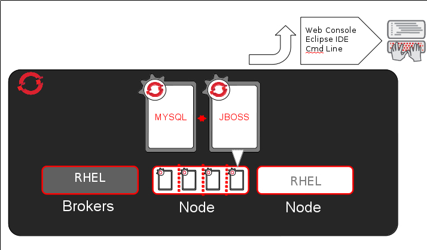
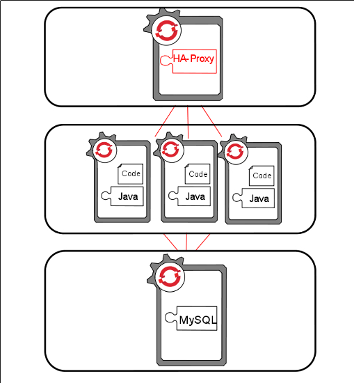

Drupal hosting
in the
Open Cloud
Agenda
- Cloud Basics and OpenShift
- Portable Drupal applications
- Shifting exsting Drupal sites to run in the Open Cloud
- Release Management with Git
- Advanced Monitoring and Scaling
Code du jour
https://github.com/smerrill/drupal-quickstart
The Cloud
IS
being liberated
The Cloud Landscape

OpenStack
IS OPEN
focused on IaaS
The big picture

Public Cloud + Private Cloud =
Hybrid Cloud
Portable Drupal?
Gearing up a new app on OpenShift
rhc app create APP_NAME APP_CARTRIDGE CART_2 CART_3rhc app create dcla php-5.3 mysql-5.1 --from-code=https://github.com/smerrill/drupal-quickstartApplication Options
-------------------
Namespace: rjdemo
Cartridges: php-5.3, mysql-5.1
Source Code: https://github.com/smerrill/drupal-quickstart
Gear Size: default
Scaling: no
Creating application 'dcla' ...
done
Application dcla was created.
The cartridge php deployed a template application
mysql-5.1: Connection URL: mysql://$OPENSHIFT_MYSQL_DB_HOST:$OPENSHIFT_MYSQL_DB_PORT
Starting Apache+mod_php HTTPD server
MySQL 5.1 database added. Please make note of these credentials:
Root User: adminz3kcLEm
Root Password: 61ajycfyT5uu
Database Name: dcla
Connection URL: mysql://$OPENSHIFT_MYSQL_DB_HOST:$OPENSHIFT_MYSQL_DB_PORT/
You can manage your new MySQL database by also embedding phpmyadmin-3.4.
The phpmyadmin username and password will be the same as the MySQL credentials above.
Waiting for your DNS name to be available ... doneCloning into 'dcla'...
The authenticity of host 'dcla-rjdemo.rhcloud.com (54.234.77.138)' can't be established.
RSA key fingerprint is cf:ee:77:cb:0e:fc:02:d7:72:7e:ae:80:c0:90:88:a7.
Are you sure you want to continue connecting (yes/no)? yes
Warning: Permanently added 'dcla-rjdemo.rhcloud.com' (RSA) to the list of known hosts.
Your application 'dcla' is now available.
URL: http://dcla-rjdemo.rhcloud.com/
SSH to: 51e2dc0f4382eccaae0000e5@dcla-rjdemo.rhcloud.com
Git remote: ssh://51e2dc0f4382eccaae0000e5@dcla-rjdemo.rhcloud.com/~/git/dcla.git/
Cloned to: /home/ryan/src/dcla
Run 'rhc show-app dcla' for more details about your app.Success!
You should now have a basic Drupal app running on OpenShift!
Your gear is now configured with:
- it's own git repo
- it's own Apache webserver
- ssh access
- logging
- MySQL
- publicly accessible DNS
Shifting exsting Drupal sites to run in the Open Cloud
One port to bind ...
Environment Variables
$ip_addr = getenv('OPENSHIFT_PHP_IP') || '127.0.0.1';
$port = getenv("OPENSHIFT_PHP_PORT") || 8000;
$hostname = getenv('OPENSHIFT_APP_DNS') || 'localhost';
secret-free source
Adding cartridges to existing applications
This command should make mysql services avilable to your application if run from within your local application source folder
rhc cartridge add mysqlBackups, snapshots, and DB bootstrapping
Release Management with OpenShift
Scaling - Two ways
Vertical - bigger, taller, more expensive
Horizontal - distributed, cheap, linear
What you need for horizontal
- Commodity "hardware"
- Easy instance creation and deletion
- Software built to grow sideways
OpenShift Architecture
OpenShift Scaling
Scaling Tips
- Build with reusable, loosely coupled pieces
- Design for retries and small pieces failing
- Borrow the best technologies
- Move static assests to a CDN
OpenShift Scaling Hooks
Setting a min and max scale from the command line
rhc cartridge-scale nodejs-0.6 -a nodeapp --min 3 --max 5Scaling Web UI

HAProxy Scaling Hooks
Adding and removing instances / scaling up and down
haproxy_ctld --uphaproxy_ctld --downHAProxy on / off switches
haproxy_ctld_daemon starthaproxy_ctld_daemon stophaproxy_ctld_daemon restartThese hooks are available on the command line within your gear, and via a REST API
HAProxy Web UI
http://$YOUR_APP_DNS/haproxy-status/
HAProxy raw data
http://$YOUR_APP_DNS/haproxy-status/;csv
Come hang out with us:
#openshift on freenode irc
More information about running Drupal on OpenShift:

https://www.openshift.com/blogs/how-to-migrate-drupal-to-openshift
https://github.com/openshift/drupal-example
Thanks for following along! --ryanj